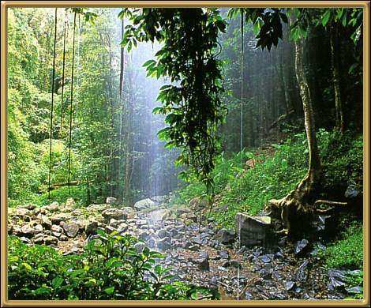

Photographer: Unknown
This is a World Heritage listed National Park and contains spectacular rainforests. In fact the whole area is quite spectacular and very beautiful. Dorrigo is up in the north of the state.